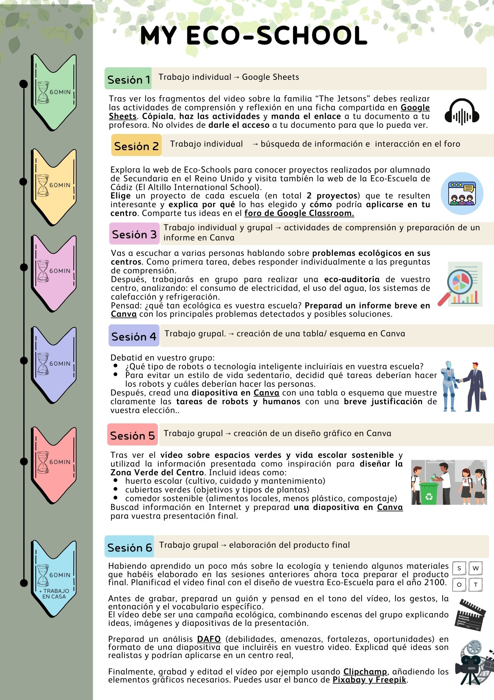

PROJECT INTRODUCTION
In this learning project, you will explore different eco-friendly and sustainable solutions that can help make a school greener and more responsible.
Throughout Sessions 1 to 5, you will receive input through videos, texts and listening activities, and you will complete practical tasks that will gradually prepare you for the final challenge.These activities will help you develop your ideas, improve your English skills, and create materials that you will later use in your final project. Make the most of your potential by staying active, creative and collaborative during each session.
Now you are probably asking yourself: What is the final product?
Your final task is to design and present your Eco-School of the year 2100 through a creative and persuasive video. You will explain how technology and human responsibility can work together to make your school more sustainable.
Don’t worry if you are not sure how to start — this learning project will give you all the tools, information and guidance you need, step by step.
Are you ready to learn loads of new things? Believe in yourself! Time to get round to work! 🧑💻 ☺️
To help you visualise your work, take a look at this timeline:

Evaluation:
You work will be evaluated with the following rubric:

To make it easier, here comes a document with a simplified rubric to help you understand what you need to focus on to get the highest mark: